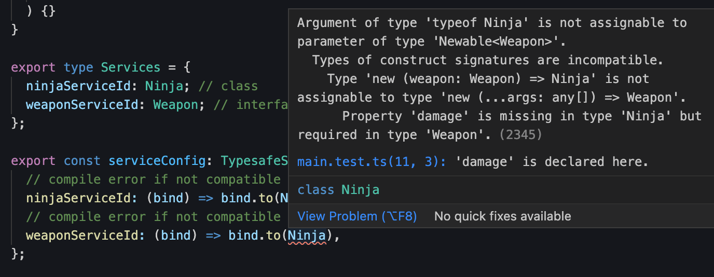
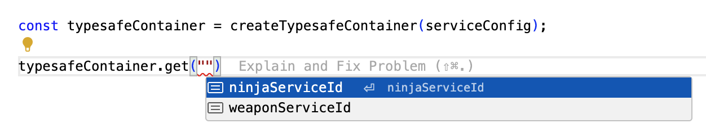
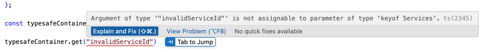
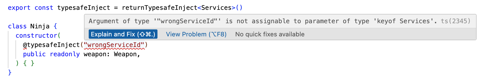

inversify-typesafe
inversify-typesafe
Boost InversifyJS with Type Safety.
See Demo


import { createTypesafeContainer, returnTypesafeInject, TypesafeServiceConfig } from "inversify-typesafe";
// https://inversify.io/docs/introduction/dependency-inversion/
interface Weapon {
damage: number;
}
class Katana implements Weapon {
public readonly damage: number = 10;
}
export const typesafeInject = returnTypesafeInject<Services>()
class Ninja {
constructor(
@typesafeInject("weaponServiceId") // compile error if a parameter value is not a key of Services
public readonly weapon: Weapon,
) { }
}
export type Services = {
"ninjaServiceId": Ninja; // class
"weaponServiceId": Weapon; // interface
};
export const serviceConfig: TypesafeServiceConfig<Services> = {
// compile error if not compatible with Ninja
"ninjaServiceId": (bind) => bind.to(Ninja),
// compile error if not compatible with Katana. Use the second parameter if you need to access the container
"weaponServiceId": (bind, _container) => bind.to(Katana),
};
const typesafeContainer = createTypesafeContainer(serviceConfig);
console.log(typesafeContainer.get("ninjaServiceId").weapon.damage);
Background
InversifyJS is a dependency injection (DI) framework for JavaScript and TypeScript. Although it is excellent on its own, adding a few more type declarations allows you to write more type-safe code by leveraging TypeScript's powerful type system. Wouldn't it be great if entering just a service ID automatically infers the type, and if entering an unregistered service ID could be magically detected at compile time? I wrote this library to create a type-safe container by exploiting TypeScript's String Literal Types and a service registration method inspired by Spring.
Philosophy
In implementing the inversify-typesafe, I considered the following points:
- The library proposes an opinionated service registration method, but it should not limit InversifyJS's features.
- Users of the library should be able to use all features of InversifyJS whenever they want.
- While adhering to the above two principles, user mistakes should be caught at compile time.
- The types that the library user needs to declare should be minimized.
Good Things
- Entering a string service ID into the container automatically infers the registered type without additional type writing.
- When entering a string into the
getmethod to find a service, you can check registered service IDs via autocomplete in your code editor. - Compile-time errors occur if you enter a service ID that is not registered in the container.
- Compile-time errors occur if you enter an unregistered service ID when injecting a service.
- No additional peer dependencies. Just
inversifyandreflect-metadata. - No classes. Just functions.
- 100% test coverage.
Installation
Via npm
npm install inversify-typesafe
Via yarn
yarn add inversify-typesafe
Via pnpm
pnpm add inversify-typesafe
Demo
Try it out on Stickblitz.
Types
TBD
Usage
1. Declare Services Map Type
export type Services = {
"ninjaServiceId": Ninja; // class
"weaponServiceId": Weapon; // interface
};
Users should write Services(or whatever name you want) map type to declare the services that will be registered in the container. The keys of the Services type are used as service IDs. While InversifyJS registers various types (class, symbol, etc.) as service IDs, inversify-typesafe uses only string types as service IDs. Using string allows exploiting TypeScript's String Literal Types feature to provide magical type safety.
2. Write Service Config
import { TypesafeServiceConfig } from "inversify-typesafe";
export const serviceConfig: TypesafeServiceConfig<Services> = {
"ninjaServiceId": (bind) => bind.to(Ninja),
"weaponServiceId": (bind, _container) => bind.to(Katana),
};
This library provides a utility type called TypesafeServiceConfig<T>. TypesafeServiceConfig<T> constrains the keys of type T to be used as service IDs. Passing the previously declared Services type as the type parameter to TypesafeServiceConfig restricts usage to only the keys of the Services type. If you enter a key that does not exist in Services or do not provide a function for every key in Services, a compile-time error occurs, allowing users to write code more safely.
The object's values use lambdas to allow users to utilize all binding features of Inversify. The lambda accepts bind as the first parameter and container as the second. The first parameter is the return value of the container.bind(serviceId) function. Since the result of binding the object's key as a service ID is passed as a parameter, the user can choose how to map the service to the service ID. If the user attempts to map a service that is incompatible with the Services type declaration, a compile-time error occurs.

The lambda's second parameter receives container. Usually, using only the first parameter bind is sufficient, but you can utilize the second parameter if you need to access the container directly during the service registration process.
3. Create Typesafe Container
import { createTypesafeContainer } from "inversify-typesafe";
const typesafeContainer = createTypesafeContainer(serviceConfig);
The createTypesafeContainer() function takes an argument of type TypesafeServiceConfig<T> and returns TypesafeContainer<T>. Users do not need to specify Generic type parameters manually.
4. Get Service
const ninjaService = typesafeContainer.get("ninjaServiceId");
Passing a key of the user-declared Services type as an argument returns the bound service. The return type is inferred well without any additional type writing, and registered service IDs can be checked via autocomplete in the code editor.

Entering a value that is not a key of Services causes a compile error.

5. Inject Service
import { returnTypesafeInject } from "inversify-typesafe";
export const typesafeInject = returnTypesafeInject<Services>()
class Ninja {
constructor(
@typesafeInject("weaponServiceId")
public readonly weapon: Weapon,
) { }
}
Calling the high order function returnTypesafeInject<T>() with the user-declared Services type as the type parameter returns a decorator function. Entering a value other than a key of the Services type into this decorator's parameter causes a compile error.

6. Every InversifyJS features is possible
const ninjaService = typesafeContainer._get("ninjaServiceId");
The _get method of type TypesafeContainer<T> performs the same function as the get method of the existing Container type. You can use the _get method when you need the original get method rather than the type-safety enhanced function.
All methods except the get method are identical to the InversifyJS Container type.
inversify-typesafe-spring-like
Add-On Library for inversify-typesafe to make it more like Spring.
Try it out on Stickblitz.
License
MIT © Myeongjae Kim